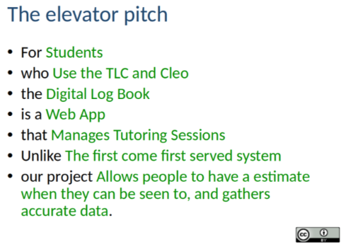
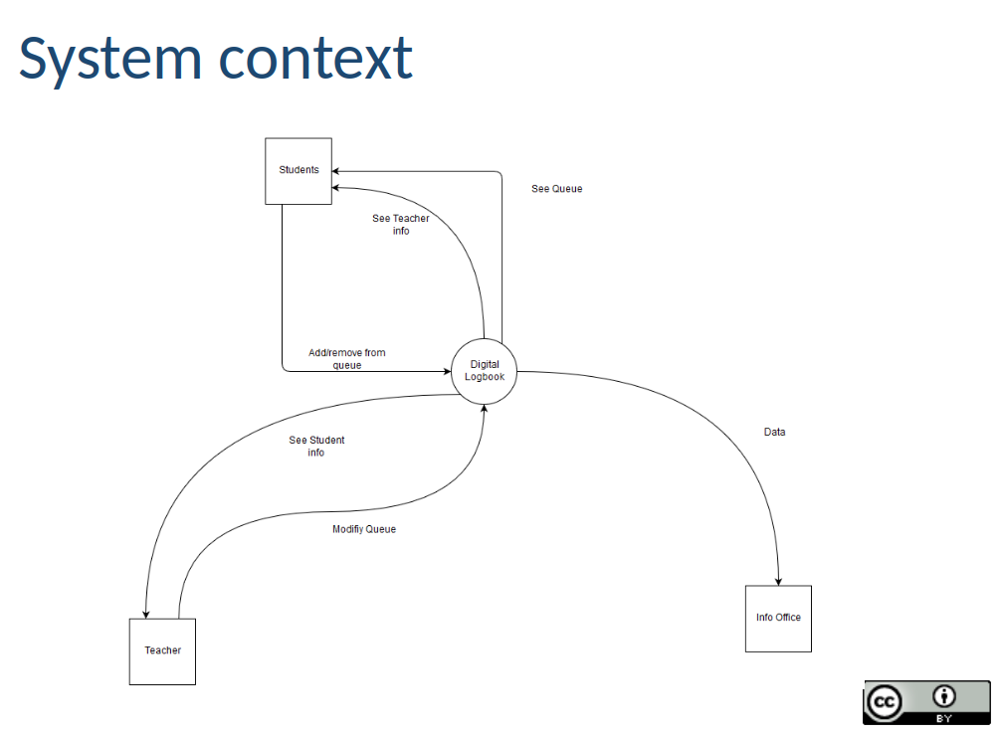
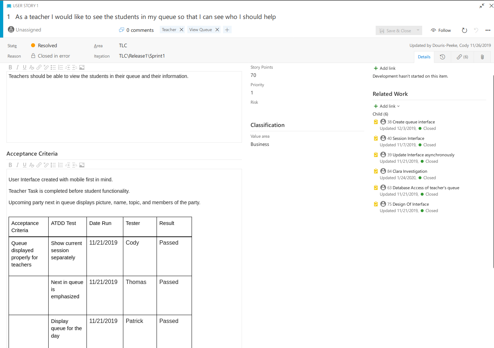
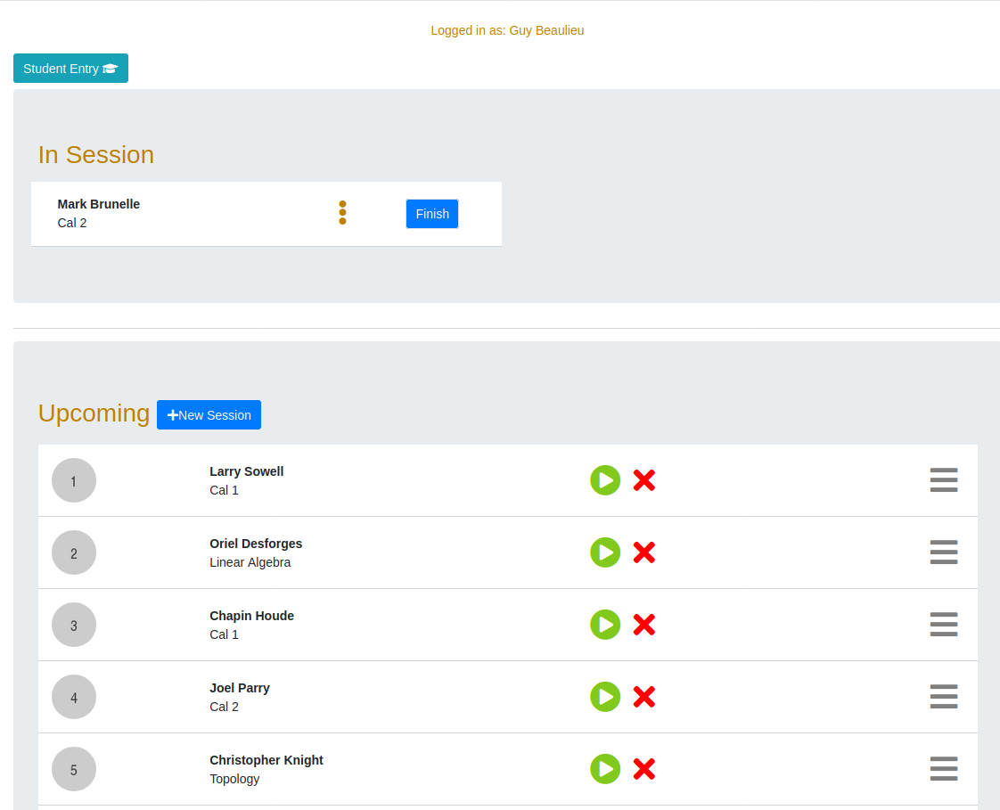

Academic Services are always seeking to optimize allocation of its resources. In so far as the TLC is concerned, they are interesting in measuring, among other things, demand for help. Up until now, Academic Services have been working with non-machine readable, and inaccurate data coming from the TLC. This data was produced by students checking into the TLC by writing down their student number and topic in a notebook. While the lack of machine-readability is clear, the inaccuracy was in large part due to students forgetting to use the notebook or not being aware of it altogether.
With the system, the students are prompted to enter their identifying information electronically to then be managed by teachers, in an environment where all operations are recorded. This makes it possible to produce detailed, and more importantly, accurate reporting to Academic Services. Below is the elavator pitch describing the purpose of the application.

The TLC system is largely independent from other systems with the exception of its dependence on AMS (Application Management System) for authentication and authorization, and Clara for finding students, teachers and courses. The (out-dated) system context diagram may be found below:

The main function of the system are to be an effective queue management solution which tracks usage.
A business requirement is a statement or a series of statements describing an aspect of the system from a business perspective. They come in the form of either functional or non-functional requirements. A functional requirement describes what a system must do, while a non-functional requirement describes how it must do it. We used user stories to track the requirements and checked off the acceptance criteria in order to make sure the end product matched requirements. An example of a non-functional requirement within the system was that the system must be usable on a touchscreen.
The business requirements originated from meetings with the client. The initial user meeting served as the starting point to gauge the specifics of the system. Subsequent sprints were then used to the demonstrate the state of the system in order to generate feedback as well as to further refine the requirements. Meeting minutes were taken for the initial user meeting, sprint 1 meeting, sprint 2 meeting, and sprint 3 meeting.
I worked on implementing the teachers’ ability to view their queues in order to see the students who are awaiting help. The user story and its details, along with the implemented result may be found below.

